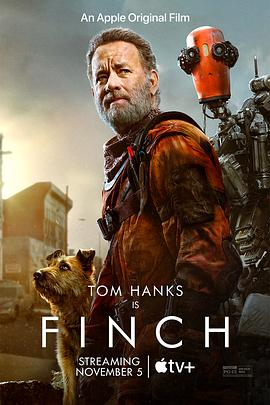

芬奇 / Finch
又名：芬奇的旅程 / 生化 / 人生 / BIOS
末日题材确实是个很沉重的话题，剧情老套但是拍出来很动人。只有6个演员的电影，相当不错
作品信息
| 导演 | 米格尔·萨普什尼克 |
| 编剧 | 克雷格·勒克 / 艾弗·鲍威尔 |
| 主演 | 汤姆·汉克斯 / 卡莱伯·兰德里·琼斯 / 希默斯 / 洛拉·玛汀内斯-康宁安 / 玛丽·瓦根曼 / 奥斯卡·阿维拉 |
| 类型 | 剧情 / 科幻 |
| 制片国家/地区 | 美国 |
| 语言 | 英语 |
| 上映日期 | 2021-11-05(美国) |
| 片长 | 115分钟 |
| IMDb | tt3420504 |
说过什么
2021-11-13 20:25:32
广播 · 看过
末日题材确实是个很沉重的话题，剧情老套但是拍出来很动人。只有6个演员的电影，相当不错
2021-10-25 06:06:16
广播 · 想看
最后一次看到是 2026-08-01T11:05:12+10:00 · 豆瓣原页